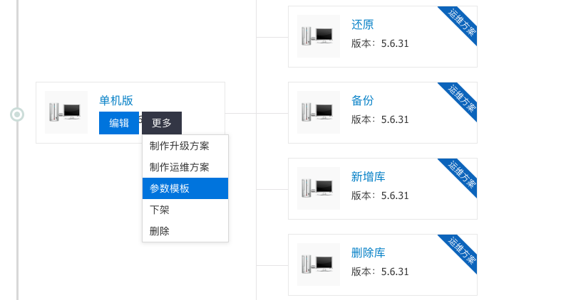
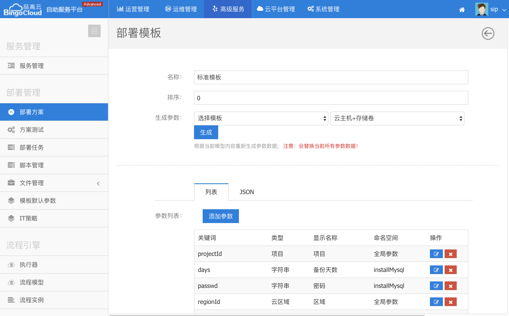

设计完成之后，要部署测试，但是安装之前，还需要给部署方案配置参数模板。

关于参数设计的详细文档，请查阅https://siprs-doc.github.io/designer/paramDesigne.html
自动化部署服务，为了方便设计者配置参数模板，提供了两种通用模板，您可以在这两份模板的基础上，进行少量的修改，即可使用。

对于应用交付来说，资源创建的参数大多数是相同的，系统提供了，单独的云主机创建模板和带有存储卷的模板，设计者再自行添加业务参数即可。
用户的申请页面完全由参数模板配置而成，通过这种自由的方式，您可以给用户提供不同类型的参数模板供其选择。
根据简易程度划分，可以提供简易版申请模板（例如mysql只需要用户输入mysql密码这种业务参数即可申请）和高级版申请模板（比较全的参数采集页面）。
根据功能划分，可以提供普通的集群申请模板，和异地灾备的申请模板（指定灾备节点部署在指定集群，指定网络，指定区域）。
流程模型中也可以配置参数模板，但是以部署方案中配置的参数模板为准。如果部署方案中未指定，则使用流程模型的参数模板。